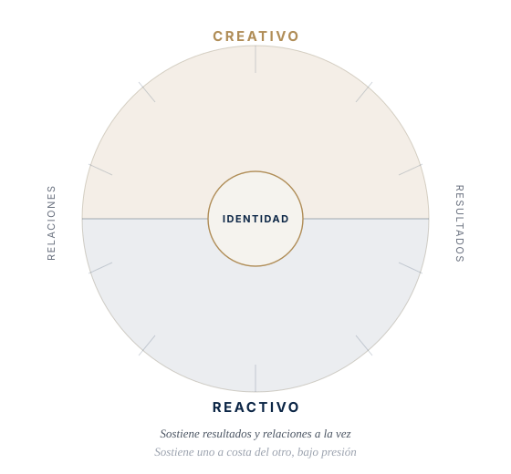
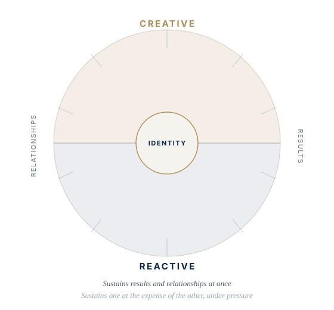

El Leadership Circle Profile® (LCP) es una de las evaluaciones de liderazgo de 360º más utilizadas a nivel directivo internacionalmente — la única que revela, en un mismo informe, qué comportamientos generan tu impacto y qué creencias internas los sostienen. The Leadership Circle Profile® (LCP) is one of the most widely used 360° leadership assessments at senior executive level internationally — the only one that reveals, in a single report, both the behaviors that generate your impact and the internal beliefs that drive them.


Ilustración propia de Mauro Delgado, inspirada en la distinción entre patrones reactivos y creativos. Original illustration by Mauro Delgado, inspired by the distinction between reactive and creative patterns.
Miden cómo logras resultados, sacas lo mejor de los demás, lideras con visión, actúas con integridad y mejoras los sistemas de tu organización. Son los comportamientos que generan confianza y resultados sostenibles en el tiempo. They measure how you achieve results, bring out the best in others, lead with vision, act with integrity, and improve your organization’s systems. These are the behaviors that build trust and sustainable results over time.
Estilos de liderazgo que priorizan la cautela sobre los resultados, la autoprotección sobre la implicación productiva, o el control sobre la alineación real. Aparecen cuando la seguridad personal depende de la aprobación, el control o la distancia. Leadership styles that prioritize caution over results, self-protection over productive engagement, or control over real alignment. They surface when a leader’s sense of security depends on approval, control, or distance.
El LCP es el único instrumento que mide ambos dominios a la vez y los integra en un solo informe — lo que permite identificar, de un vistazo, qué está funcionando, qué no, y por qué. The LCP is the only instrument that measures both domains at once and integrates them into a single report — making it possible to see, at a glance, what’s working, what isn’t, and why.
El LCP incluye una medida de Efectividad de Liderazgo directamente correlacionada con resultados de negocio, además de un índice que muestra el equilibrio real entre tus patrones creativos y reactivos — y entre atender a las personas y atender a la tarea. Es la fotografía más completa de cómo tu liderazgo se traduce, día a día, en impacto real. The LCP includes a Leadership Effectiveness measure directly correlated with business outcomes, plus an index showing the real balance between your creative and reactive patterns — and between attending to people and attending to task. It’s the most complete picture of how your leadership translates, day to day, into real impact.
Recibes tu informe completo de 360º y una sesión de debrief conmigo para interpretarlo con profundidad — un punto de partida objetivo, sin necesidad de iniciar un proceso de coaching. You receive your full 360° report and a debrief session with me to interpret it in depth — an objective starting point, with no need to begin a coaching engagement.
El LCP se convierte en el punto de partida objetivo de un proceso de coaching ejecutivo completo, sobre el que construimos todo el trabajo posterior. The LCP becomes the objective starting point of a full executive coaching engagement, and the rest of the work is built on it.
Mauro Delgado es Practicante Certificado del Leadership Circle Profile®. Leadership Circle Profile® y Leadership Circle® son marcas registradas de The Leadership Circle, LLC. Mauro Delgado is a Certified Leadership Circle Profile® Practitioner. Leadership Circle Profile® and Leadership Circle® are registered trademarks of The Leadership Circle, LLC.